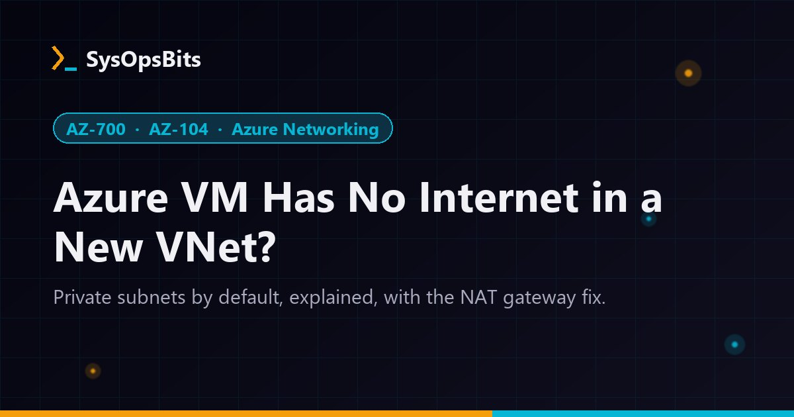

Azure VM Has No Internet in a New VNet? Private Subnets Explained
Since March 31, 2026, new virtual networks stop handing VMs a hidden public IP. Here is how to spot a private subnet, add a NAT gateway, and avoid the five traps in the switch.

Short answer: Virtual networks created with Azure API versions released after March 31, 2026 get private subnets by default (defaultOutboundAccess = false), and the Azure portal already works this way. A VM in a private subnet has no route to the internet until you add an explicit outbound method. Attach a NAT gateway to the subnet, which Microsoft recommends for most cases, or use Load Balancer outbound rules, a public IP on the NIC, or a firewall with a user-defined route.
You deploy a fresh VNet and a Windows VM from a template you've used a dozen times. The VM boots, you connect through Bastion, and then nothing works. Windows won't activate. Windows Update times out. An Azure Virtual Desktop session host never registers with its host pool. The NSG allows everything outbound, so the firewall isn't the problem.
The subnet is. Azure stopped handing out free internet access to new networks, and this guide shows you how to confirm it, fix it properly, and avoid the traps that catch people during the switch.
What changed: default outbound access is off for new VNets
For years, Azure gave any VM without an explicit outbound method a hidden public IP so it could reach the internet. Microsoft calls this default outbound access. That IP belongs to Microsoft, can change without notice, and doesn't appear anywhere you can manage it.
| Scenario | Default outbound access? |
|---|---|
| New VNet created with an API version released after March 31, 2026 (ARM, Bicep, PowerShell, CLI) | No. Subnets are private. |
| New VNet created in the Azure portal | No. The portal already defaults to private subnets. |
| New VNet from a template or Terraform pinned to an older API version | Yes. The property stays null, which allows it. |
| Existing VNets, including new VMs you add to them | Yes, unless you make the subnet private |
| VMs in a Flexible orchestration scale set | No. Flexible scale sets are secure by default. |
Microsoft gives three reasons for the change. Implicit internet access contradicts Zero Trust. Explicit connectivity is easier to reason about. The default IP isn't yours and can change. It also misbehaves: VMs with multiple NICs can get inconsistent outbound IPs, scale set instances don't share predictable IPs, and default outbound IPs don't support fragmented packets or ICMP ping.
Confirm a private subnet is your problem
Check the subnet property first:
az network vnet subnet show \
--resource-group rg-app \
--vnet-name vnet-app \
--name snet-app \
--query defaultOutboundAccessfalse means the subnet is private. Then check whether anything else gives the VM a way out: a NAT gateway on the subnet, a public IP on the NIC, a Standard load balancer with outbound rules, or a route table that sends 0.0.0.0/0 to a firewall. If none of those exist, the VM has no egress.
Microsoft's documentation names Windows Activation and Windows Update as services that fail on a private subnet without explicit egress. The same applies to anything that calls a public endpoint, including package repositories and the Azure Virtual Desktop agent.
Choose an explicit outbound method
| Method | Best for | Watch out for |
|---|---|---|
| NAT gateway on the subnet | Most workloads. Microsoft's recommended option. Static, predictable outbound IPs without the SNAT port exhaustion limits of default outbound access or load balancer outbound rules. | Outbound only. It doesn't accept inbound connections. |
| Standard load balancer with outbound rules | VMs already in a load balancer backend pool | You size and manage SNAT port allocation yourself. |
| Public IP on the VM's NIC | A single jump box or a lab VM | Exposes the VM to inbound traffic. Lock it down with an NSG. |
| Azure Firewall or an NVA, with a UDR | Hub-and-spoke networks that inspect all egress | Highest cost and complexity. A UDR to the firewall overrides a NAT gateway on the same subnet. |
Microsoft documents that a NAT gateway takes precedence over load balancer outbound rules and instance-level public IPs on the same subnet for new connections. Existing connections finish on their old path, so adding one causes no outbound downtime. The exception is routing: a user-defined route that sends 0.0.0.0/0 to a firewall or NVA overrides the NAT gateway.
Fix it: add a NAT gateway with the Azure CLI
Three commands, taken from Microsoft's NAT gateway quickstart. First, a Standard static public IP:
az network public-ip create \
--resource-group rg-app \
--name pip-natgw \
--sku Standard \
--allocation-method StaticNext, the NAT gateway itself. The TCP idle timeout defaults to 4 minutes:
az network nat gateway create \
--resource-group rg-app \
--name natgw-app \
--public-ip-addresses pip-natgw \
--idle-timeout 4Finally, attach it to the subnet:
az network vnet subnet update \
--resource-group rg-app \
--vnet-name vnet-app \
--name snet-app \
--nat-gateway natgw-appTest from the VM with Test-NetConnection www.microsoft.com -Port 443 on Windows or curl -I https://www.microsoft.com on Linux. If you need many outbound IPs, give the NAT gateway a public IP prefix instead of a single address. Microsoft also offers a Standard V2 NAT gateway SKU with zone-redundant deployments. Check its documentation before you choose between the two.
Five traps during the switch
1. Changes need a stop and deallocate
When you flip an existing subnet between private and non-private, existing VMs keep their old NIC state until you stop and deallocate them. A restart from inside the OS doesn't count.
2. UDRs with next hop "Internet" break
A common hub design sends 0.0.0.0/0 to a firewall and adds service tag routes with next hop type Internet to bypass inspection. In a private subnet those bypass routes fail unless the source also has an explicit outbound method. Service endpoints aren't affected, because they use the VirtualNetworkServiceEndpoint next hop.
3. Load balancers with IP-based backend pools
Microsoft lists a known issue: a backend pool configured by IP address still uses default outbound access. Attach a NAT gateway to those VMs' subnet for a secure configuration. If you're building load balancers, our internal load balancer guide covers backend pools and rules.
4. Some traffic still works, which hides the problem
VMs in a private subnet can still reach Azure Storage accounts in the same region without an explicit outbound method. A storage test that passes tells you nothing about internet access. Control that egress with an NSG, or keep storage traffic private with private endpoints or service endpoints.
5. The Advisor alert won't clear
Azure Advisor flags NICs under the Operational Excellence recommendation "Add explicit outbound method to disable default outbound". A VM in a non-private subnet can keep a default outbound IP even after you add a NAT gateway, although it no longer uses that IP. To clear the alert, make the subnet private and stop and deallocate the VM.
Azure Virtual Desktop session hosts need this too
A session host in a private subnet can't reach the service endpoints its agent needs, so it never shows up as available in the host pool. Microsoft's Tech Community published separate transition guidance for Azure Virtual Desktop and Windows 365 customers. Add the NAT gateway before you deploy hosts with the steps in our AZ-140 host pool lab.
The egress design also affects connection quality. Azure Firewall and NAT gateway use symmetric NAT, which pushes RDP Shortpath for public networks from a direct STUN path to a relayed TURN path. Our RDP Shortpath and Private Link guide lists the firewall rules TURN needs.
Can you turn default outbound access back on?
Yes. You can still create non-private subnets with the portal, ARM, PowerShell, or CLI (az network vnet subnet update ... --default-outbound true), then stop and deallocate the VMs. Treat that as a bridge while you build NAT gateways, not a destination. Microsoft recommends explicit outbound connectivity for every workload, including those in existing networks.
What AZ-700 and AZ-104 expect you to know
The AZ-700 skills outline lists "Identify appropriate use cases for Azure NAT Gateway", "Implement Azure NAT Gateway", and "Create and configure explicit outbound rules, including source network address translation (SNAT)". Expect a scenario where VMs in a new subnet can't download updates and you choose the fix. NAT gateway wins unless the VMs already sit behind a Standard load balancer. AZ-104 tests the same networking domain. Review Azure networking fundamentals if subnets and routing still feel shaky, then try the free AZ-104 practice test.
Frequently Asked Questions
Why can't my new Azure VM reach the internet?
VNets created with API versions released after March 31, 2026, and VNets created in the Azure portal, use private subnets by default. VMs in a private subnet need an explicit outbound method such as a NAT gateway, a load balancer outbound rule, a public IP, or a firewall route.
Are existing Azure VMs affected by the default outbound access change?
No. Microsoft doesn't change existing VNets. Existing VMs, and new VMs you add to existing VNets, keep default outbound access unless you make the subnet private.
What is the recommended fix for default outbound access?
Microsoft recommends associating a NAT gateway with the VM's subnet for most scenarios. It provides static, predictable outbound IPs and takes precedence over load balancer outbound rules and instance-level public IPs on that subnet for new connections.
Does Windows Update work in a private subnet?
Not without an explicit outbound method. Microsoft's documentation names Windows Activation and Windows Updates as services that fail on a private subnet without explicit egress.
Do I need to restart VMs after changing a subnet to private?
You need to stop and deallocate them. A guest OS restart doesn't apply the change to the network interface.
Sources: Default outbound access in Azure, Quickstart: create a NAT gateway, What is Azure NAT Gateway?, and the AZ-700 study guide on Microsoft Learn.